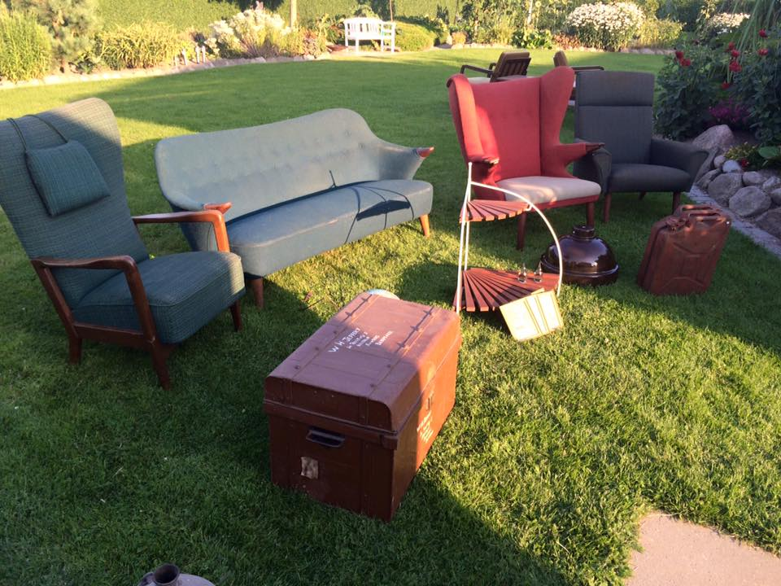
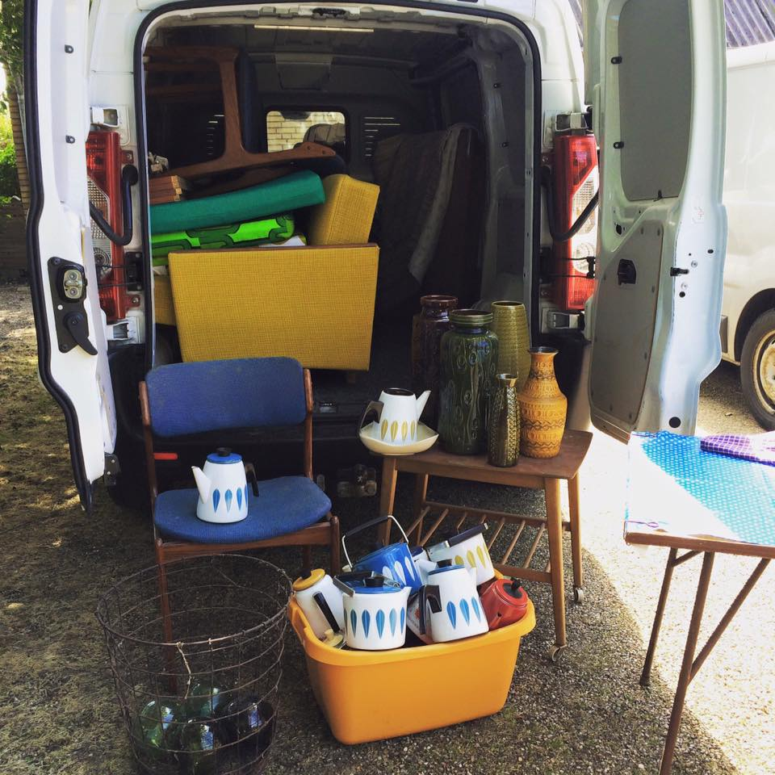

OPKØB AF DØDSBO, FLYTTEBO OG RESTBO, SAMT GAMLE MØBLER OG DESIGN
- Altid med dybeste respekt for de pårørende og altid en professionel vurdering
Skal du have tømt et dødsbo? Flytte? Eller skal du blot igang med at rydde ud i dine gamle møbler? Så kan jeg helt sikkert hjælpe.
Mit navner Majken Nedergaard og jeg er indehaver af butikken, Retrohjem i Viborg, som jeg har drevet fuldtid, siden 2013. Retrohjem er salgskanalen, for de mange smukke møbler og småting, jeg opkøber og giver nyt liv.
Jeg har siden 2013 opkøbt dødsboer i hele Danmark. Når jeg køber et dødsbo, foregår det altid med dybeste respspekt og stor omtanke for de pårørende. Jeg ved at man ofte står i en vanskelig og uoverskuelig situation, hvorfor du altid kan forvente, at jeg går til opgaven på den bedste og mest hensigstmæssigevis. Det er vigtigt for mig er, at de mennesker jeg handler med, får den bedste og mest reelle vurdering af deres ting, således at man som pårørende har en god oplevelse, hvor der er ro i maven hele vejen.
Der findes rigtig mange opkøbere af dødsboer på markedet og det kan være svært at vælge. Jeg lever i denne branche og ved, hvad jeg har med at gøre, det er ikke blot en hobby. Du er derfor sikret de absolut bedste vilkår og bedste pris, under hele forløbet.
Forløbet foregår som oftest sådan her:
- Du ringer til mig, Majken, som giver dig en kyndig vejledning i processen og vi finder en dato, hvor det passer at jeg kigger forbi.
- Jeg kommer ud og giver en professionel vurdering – ganske uforpligtende
- Vi aftaler, hvorvidt jeg skal købe dele af dødsboet eller lave en totalrydning
- Vi fastsætter en pris som alle er tilfredse med
- Aftaler en tid for hvornår dødsboet skal være tømt
- Jeg tømmer dødsboet indenfor aftalt tid
- Vi afregner aftaleprisen og handlen afsluttes
Jeg har stor interesse i følgende:
- Tømning af dødsboer og flyttebo i hele Danmark.
- Køb af gamle møbler, køb af antikke møbler
- Køb af teaktræsmøbler og møbler i palisander
- Opkøb af designer møbler, brugskunst og porcelæn
- Køb af retro møbler, brugskunst og porcelæn fra 1950’erne – 1970’erne
- Opkøb af plejehjemsbo
- Opkøb af danske designmøbler
Dette har jeg ikke så stor interesse i:
- Rydning af dødsboer – jeg varetager ikke opgaver, hvor der udelukkende er tale om en tømning uden værdier. altså desciderede oprydnings og bortskaffelsesopgaver.
- Møbler fra 1990’erne og frem
Jeg tilbyder
- Stor erfaring og ekspertise
- Altid en god og fair pris
- Totalrydning eller køb af enkelte møbler
- Jeg varetager hele arbejdet, både nedtagning af lamper mv. ved totalrydning af dødsboet, samt bortskaffelse af eventuel affald
Opkøb af møbler i teaktræ og palisander
Jeg har en stor passion for retro møbler og brugskunst fra perioden 1950’erne-1970’erne. Herunder køb af teaktræsmøbler, palisandermøbler og designmøbler, men mindre genstande som fx keramik, lamper og lignende kan også sagtens være interessant for mig.
Kontakt Retrohjem, hvad end der er tale om rydning af dødsbo, eller blot salg af dine gamle møbler – jeg giver altid en god og fair pris, så du er sikret den bedst mulige handel.
Opkøb og tømning af dødsbo i hele Danmark!
Køb og tømning af dødsboer er som nævnt, noget jeg mange års erfaring med og som jeg sætter en stor ære i. Jeg elsker arbejdet med de mange skønne mennesker og familier jeg møder, samt æren I at få lov til at give møblerne nyt liv. Jeg kører gerne til adresser i hele jylland for at hjælpe dig med at rydde og tømme et dødsbo og du får naturligvis altid et seriøst, godt og velovervejet bud. Så uanset om det drejer sig om opkøb af dødsbo på sjælland, fyn eller jylland, så kan jeg varetage opgaven.
Anmeldelser – Det siger folk jeg har opkøbt dødsboer af
“Jeg har haft fornøjelsen af at lære Majken Rold Nedergaard/Retrohjem.dk at kende ifb. med tømning af en ældrebolig. Jeg kontaktede hende, med henblik på, om hun måske kunne være interesseret i at købe noget af indboet. Det var hun bestemt, og hun kom hurtigt, og vurderede det hun var interesseret i – og ville købe. Der kom hurtigt en aftale igennem, og der blev handlet til min/vores fulde tilfredshed. Hun er meget ærlig og loyal. Jeg kan kun sige positive ting om min oplevelse med at handle med Majken, og giver hende min største anbefaling.” Aase Skov
“Jeg har i flere år fulgt Retrohjem på forskellige sociale medier og har altid synes, at de sælger de fedeste ting! Da mine søskende så stod i den situation, at vi skulle sælge vores barndomshjem, var vi ikke et øjeblik i tvivl om, at det var Retrohjem, vi ville have til at opkøbe møblerne i hjemmet. Jeg kontaktede Majken og hun kom ud, en lørdag, og vi gennemgik sammen huset og jeg fik lov til at fortælle om tingenes historie og små anekdoter. Majken spurgte tit, om jeg nu var sikker på, at vi ville sælge de forskellige ting og gjorde det klart, at det var vigtigt for hende, at vi havde taget det vi selv ønskede. Vi fik en meget god pris for tingene og var meget glade for hele processen og har med stor fornøjelse fulgt med på Instagram, når de forskellige møbler fra barndomshjemmet, blev sat til salg. Vi kan kun anbefale andre til at bruge Retrohjem til at opkøbe deres møbler, for det bliver gjort med stor professionalitet og med hjertet.” Mvh Karin
OBS! Send gerne billeder af de genstande I ønsker at sælge til mail@retrohjem.dk, for en eventuel forhåndsvurdering.
 kontakt mig